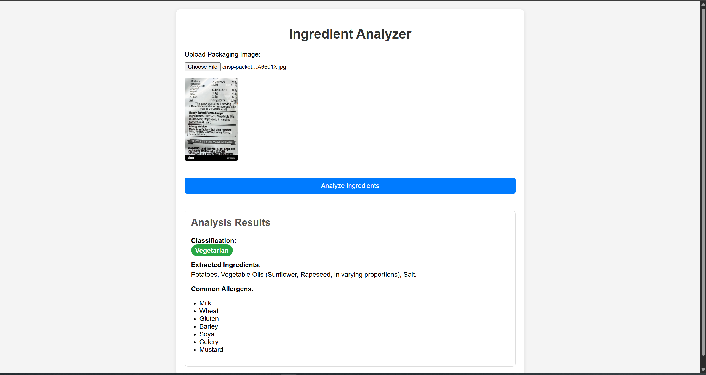

My Website Project
street food website
This project is a street food ordering platform for foodies, streamlining the process from craving to consumption. It demonstrates my ability to build a fully functional website from scratch.

Skills Demonstrated
HTML
Used semantic HTML5 to structure the website for accessibility and SEO.
CSS
Implemented responsive design using CSS Grid and Flexbox for a seamless user experience across devices.
JavaScript
Added interactive features using JavaScript, such as form validation, dynamic content loading, and user authentication.
AI-Powered Food Recognition and Allergen Scanner Website
This web application leverages the power of Artificial Intelligence and Google's Vision API to provide a comprehensive analysis of food products. By simply uploading an image of a food product's back of the package with the ingredients list, the website delivers a detailed breakdown.
key features:
Image-to-Text Recognition (OCR): The core of this project is the use of Google's Vision API to perform Optical Character Recognition (OCR), accurately extracting the text from the uploaded image of the food label
Intelligent Ingredient Analysis: The extracted text is then processed by an AI model to identify and list the ingredients. It also classifies the food as vegetarian or non-vegetarian based on the ingredient list.
User-Centric Design: The clean and intuitive interface makes it easy for anyone to upload an image and receive instant, actionable information about their food.
This project demonstrates my proficiency in integrating powerful third-party APIs, building a functional and responsive web application, and utilizing AI for practical, real-world solutions. It highlights a commitment to creating tools that are both innovative and beneficial to users, helping them make informed and healthier choices.